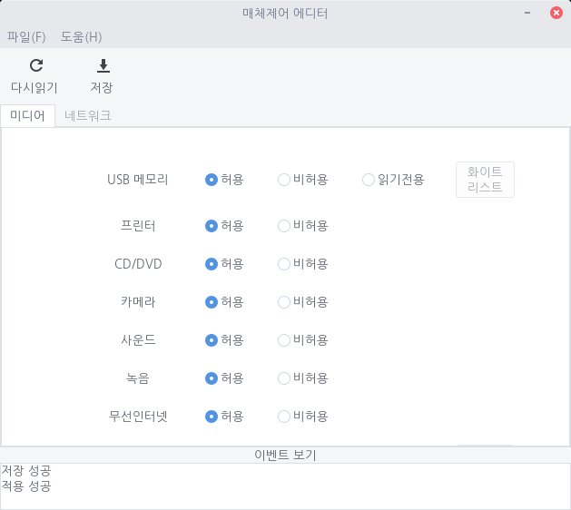
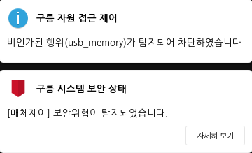
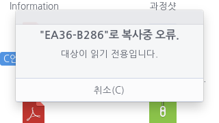
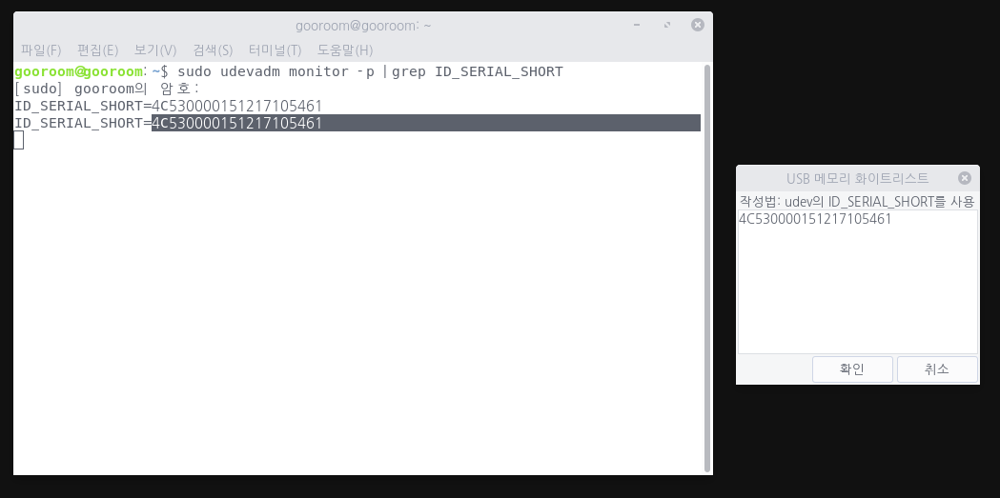
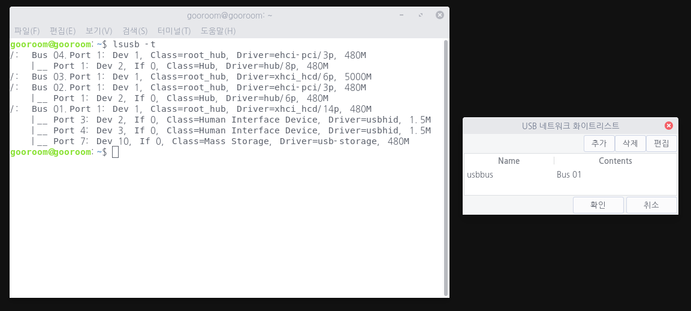

구름 플랫폼에서 사용 허용/비허용 정책을 지원하는 미디어의 종류는 다음과 같습니다.
| USB 메모리 | |
| 프린터 | |
| CD/DVD | 카메라 | 사운드 | 녹음 | 무선인터넷 | 블루투스 | USB 키보드 | USB 마우스 | 스크린캡쳐 | 클립보드 | USB 네트워크 |
매체제어 편집기에서 다음과 같이 라디오 버튼을 클릭함으로써 정책을 변경할 수 있습니다. 변경을 마친 후에는 반드시 저장버튼을 클릭하셔야 상태가 저장됩니다.

이벤트 보기를 통해 원하는 작업의 성공여부를 확인할 수 있습니다.
예를 들어, USB 메모리의 상태를 비허용으로 변경 후 저장 버튼을 클릭하면 USB 메모리를 사용할 수 없는 상태가 됩니다. 만약 USB 메모리가 비허용 상태인데, USB 메모리를 삽입하면 모니터 우측 상단에 다음과 같은 안내 메시지가 나타납니다

또한, 하단의 보안 상태 역시 취약상태로 변경되고, USB 메모리가 마운트 되지 않습니다.
USB 메모리의 정책을 읽기전용으로 변경한 후 USB를 삽입하면,
비허용 상태와 같은 메시지가 오른쪽 상단에 출력됩니다. 보안 상태 역시 취약으로 변경됩니다. 하지만 USB는 마운트가 가능하고, 메모리의 자료들도 읽기 가능합니다.
메모리의 정보를 수정하거나, 자료를 추가할 시에는 다음과 같은 안내 메시지가 출력되며 저장할 수 없습니다.

화이트 리스트는 미디어 매체에 대해서 비허용으로 설정하더라도 특정 매체에 대해서 명시적으로 허가하는 목록입니다. 구름 플랫폼의 매체제어 편집기에서는 USB 메모리, 블루투스, USB 네트워크에 대해 화이트 리스트 기능을 지원하고 있습니다.
USB 메모리의 화이트 리스트버튼을 클릭하고 아래의 절차에 따라 화이트 리스트를 작성해주세요.
1.터미널을 실행 합니다. 2. 다음 명령어를 입력한 후 암호를 넣어줍니다.sudo udevadm monitor -p | grep ID_SERIAL_SHORT3. USB 메모리를 삽입합니다. 4. 시리얼 넘버를 확인하여 리스트를 작성합니다.  5. 확인 버튼을 클릭하고, 저장 버튼을 눌러 적용시킵니다.
블루투스의 화이트 리스트버튼을 클릭하고 아래의 절차에 따라 화이트 리스트를 작성해주세요.
1.터미널을 실행 합니다. 2. 다음 명령어를 입력한 후 암호를 넣어줍니다.sudo bluetoothctl3. 블루투스를 연결 합니다. 4. MAC주소를 확인하여 리스트를 작성합니다. 5. 확인 버튼을 클릭하고, 저장 버튼을 눌러 적용시킵니다.
USB네트워크는 USB로 설치하는 bluetooth, lancard, network 장비를 의미합니다. USB 네트워크의 화이트 리스트버튼을 클릭하고 아래의 절차에 따라 화이트 리스트를 작성해주세요.
1.터미널을 실행 합니다. 2. usbutils 패키지를 설치하기위해 아래의 명령어를 입력합니다. 필요한 경우 사용자 암호를 넣습니다.sudo apt install usbutils3.아래의 명령어를 이용해 버스 넘버를 확인합니다.lsusb -t4. 화이트 리스트 창에서 추가 버튼을 클릭합니다. 5. Name 부분에는 usbbus 라고 입력하고, Contents 부분에는 터미널에서 확인한 버스 넘버를 입력합니다. - 삭제 버튼은 화이트 리스트에서 목록을 삭제하기 위해 사용됩니다. - 편집 버튼은 이미 추가된 항목의 편집을 위해 사용됩니다.  6. 확인 버튼 클릭 후 저장 버튼을 눌러 정책을 반영시킵니다.